Your README,
verified against your code.
A free Claude skill that writes READMEs from your real repo, then checks every command, script, env var and path in them. Nothing ships that the code doesn't back up.
claude plugin install readme-forge --marketplace tanmayai23/README-Editor-skill
Works in Claude Code, claude.ai and Claude Desktop · MIT licensed
$ python verify_readme.py README.bad.md --repo .✓ 6 command npm install [package.json exists]✗ 6 package_manager npm [repo uses pnpm (pnpm-lock.yaml), not npm]✗ 7 script pnpm run deploy [no 'deploy' script in package.json (scripts: dev, test)]✓ 7 package_manager pnpm [pnpm-lock.yaml matches pnpm]✗ 8 env_var REDIS_URL [not referenced in any code, config or .env file]✗ 9 command docker compose up worker [no service worker in docker-compose.yml (services: api, db)]✗ 12 path docs/setup.md [no docs/setup.md in the repo]claims: 7 checked · 2 verified · 5 not found · 0 unverifiable · 1 generic · accuracy 28.6%

How it works
Facts first, then words.
Other tools write a README that sounds right. readme-forge only writes what it can point to in a file.
-
01
Reads your repo
Manifests, lockfiles, scripts, env vars, Docker, CI and routes, across 15 ecosystems.
-
02
Writes from facts
Every line comes from something it found, with a
TODOwhere it couldn't find anything. -
03
Checks every claim
Commands, scripts, flags, env vars and paths are checked against the code, in Claude Code or in CI. It isn't done until every ✗ is fixed or marked TODO.
The gallery
Everything it makes.
Every card is a real file in the repo. Open one to see both themes and the command that makes it.
GitHub Action
Keep it true on every pull request.
The same checks run in CI. The Action scores the README, verifies its claims and comments on the pull request when code and docs drift apart.
Read the Action docs- uses: tanmayai23/README-Editor-skill@v1
with:
min-score: "85"
min-accuracy: "100"Made something with it?
Add a screenshot and one entry to gallery.json in a pull request, or post it in Show and tell and we'll add it for you.